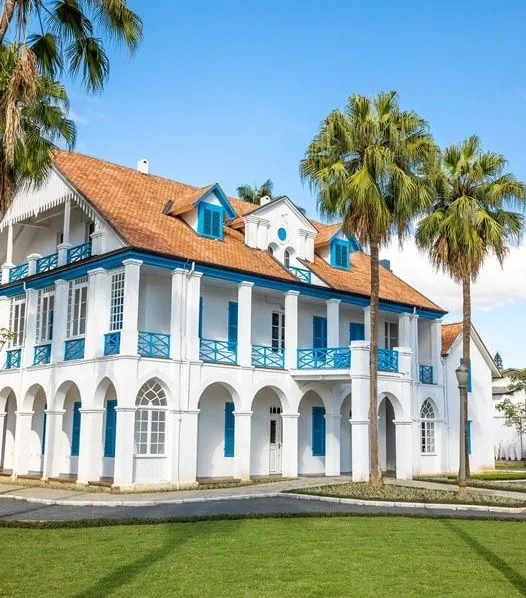
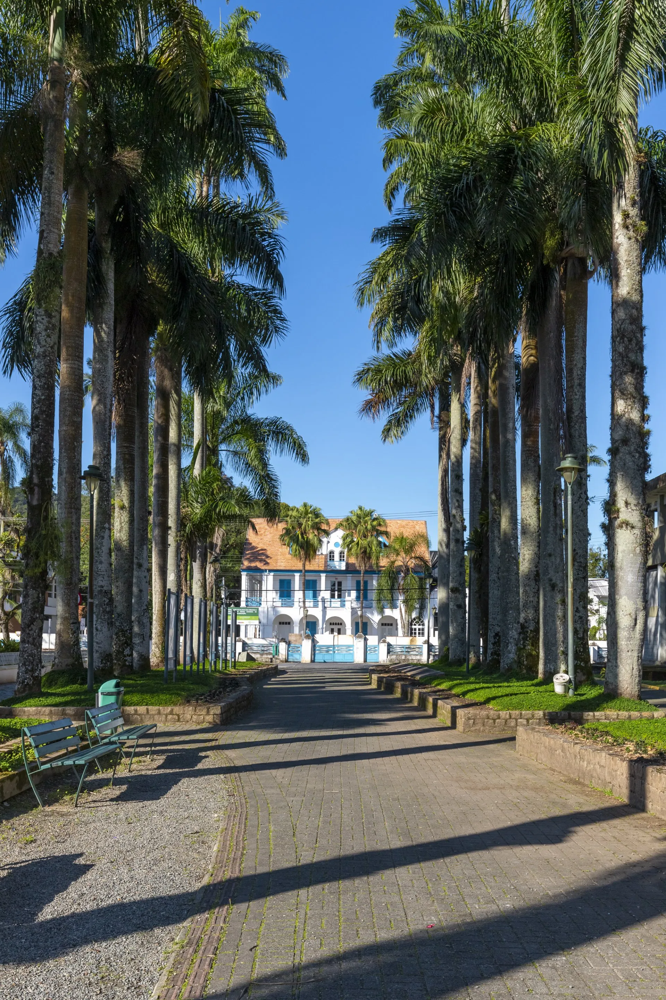
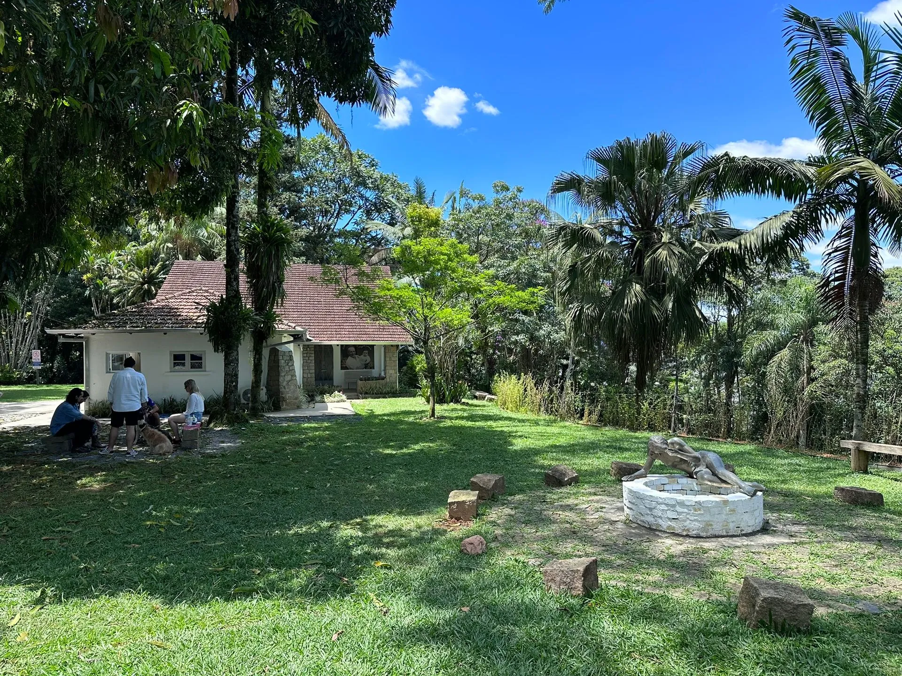
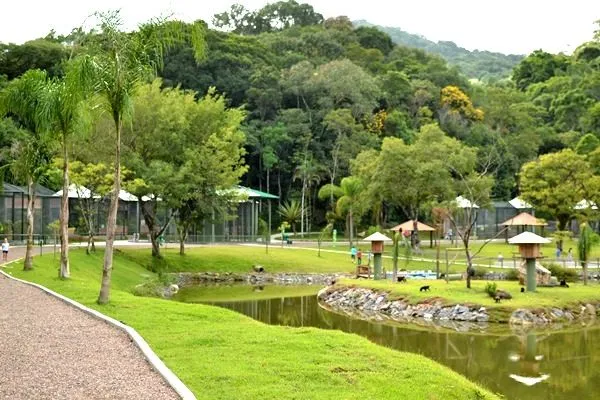
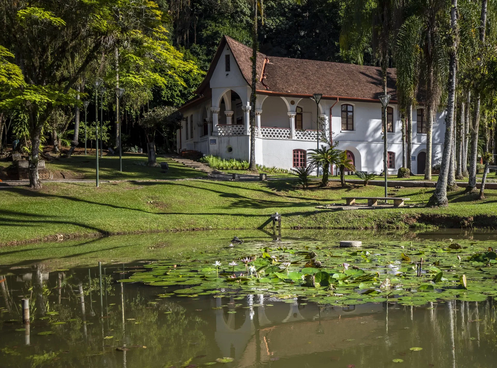
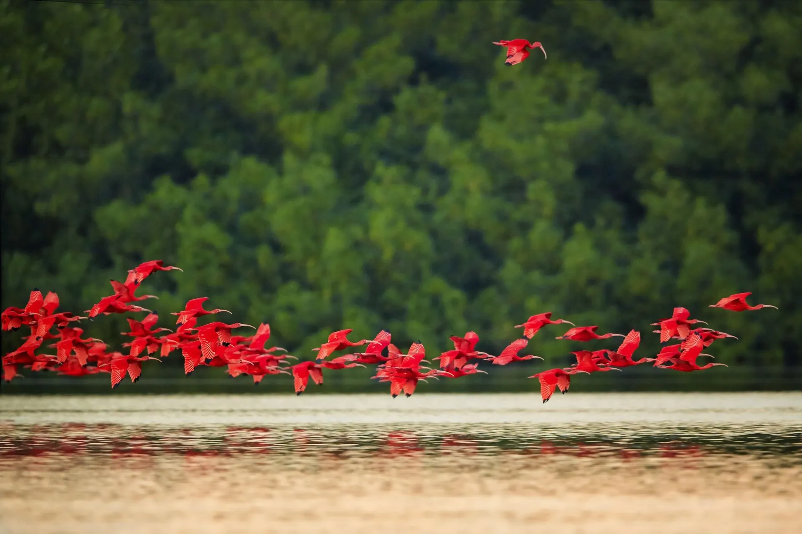

Um clássico de Joinville! O Museu esta muito lindo, ele conta a história dos Imigrantes que chegam desde 1851 até os dias de hoje em Joinville e região. Funciona de terça a domingo das 10h às 16h.


Fritz Alt foi um artista muito importante na cidade. Vários monumentos nas ruas do centro de Joinville foram feitos por ele. A casa Fritz Alt é muito linda, com um ótimo bosque para fazer piquenique e dentro você consegue ver o ateliê do artista.

Eu sugiro fortemente colocar um tênis e subir caminhando até o Mirante, o percurso de ida e volta dura em torno de 1h15, sem paradas. A vista lá de cima é incrível, de uma lado a Serra Dona Francisca e do outro a Baia Babitonga. No caminho você passa pelo Zoobotânico e respira o ar puro da Mata Atlântica.

O Museu de Artes fica na Quadra Cultural de Joinville, perto do Instituto Juarez Machado e da Cidade Cultural Antarctica. Tem um jardim super gostoso e na casa diversas exposições de arte.

A Vigorelli é uma das regiões de Joinville que conseguimos apreciar a Baia Babotinga. Os guarás são pássaros vermelhos lindos, típicos da nossa região. São fáceis de serem observados.
